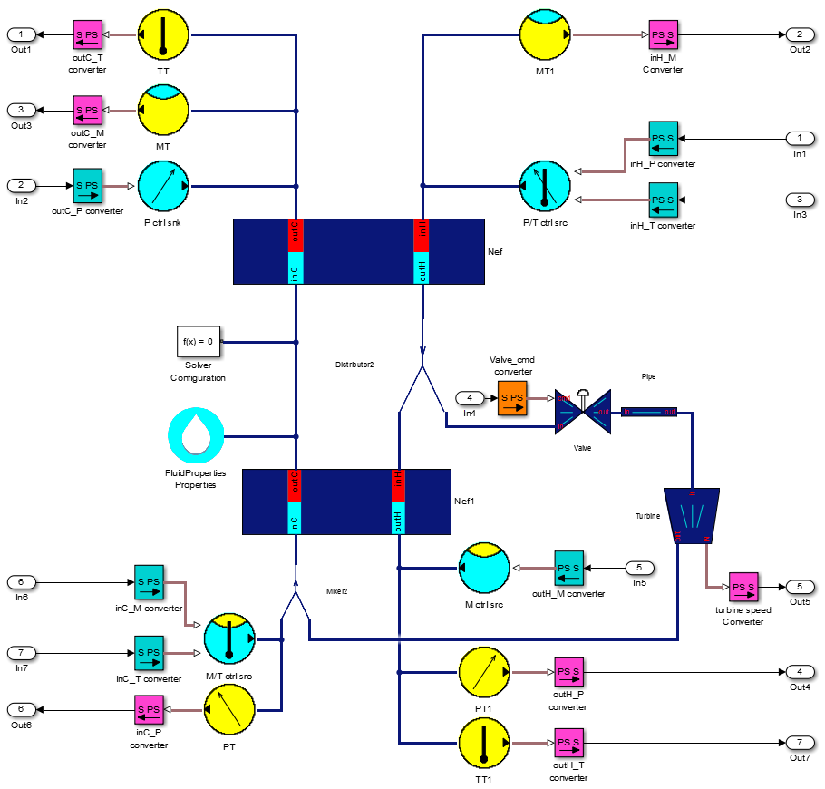

3. Brayton cycle 
a. Description
The Brayton cycle is a thermodynamic cycle that describes the
workings of a constant pressure heat engine.
It's composed of :
- Two exchangers
- One valve
- One pipe
- One turbine
In bigger system, you can find more than one turbine,
but between each turbine, you should place a pipe to calculate
the upstream and downstream pressure.
b. Simulation
Here is the set of parameters that you could use for the
simulation :
Nef
- Number of elementary loop = 8
- Hot pipe volume = 0.1134 [m^3 ]
- Cold pipe volume = 0.3 [m^3 ]
- Mass of the aluminium = 400 [kg ]
- HP drop coefficient = 0.2060 [s*bar/kg]
- CP drop coefficient = 0.3961 [s*bar/kg]
- Exchange coefficient = 6920 [J/s/K ]
- Initial hot pressure = 16 [bar ]
- Initial hot temperature = 80 [K ]
- Initial cold pressure = 1.1 [bar ]
- Initial cold temperature = 20 [K ]
- Initial hot mass flow = 0.060 [kg/s ]
- Initial clod mass flow = 0.060 [kg/s ]
Nef 1
- Number of elementary loop = 8
- Hot pipe volume = 0.02 [m^3 ]
- Cold pipe volume = 0.03 [m^3 ]
- Mass of the aluminium = 100 [kg ]
- HP drop coefficient = 0.1490 [s*bar/kg]
- CP drop coefficient = 0.5961 [s*bar/kg]
- Exchange coefficient = 3200 [J/s/K ]
- Initial hot pressure = 16 [bar ]
- Initial hot temperature = 20 [K ]
- Initial cold pressure = 1.1 [bar ]
- Initial cold temperature = 8 [K ]
- Initial hot mass flow = 0.030 [kg/s ]
- Initial clod mass flow = 0.060 [kg/s ]
Valve
- CVmax = 3.2
- Rv = 18
- Xt = 0.72
Turbine
- Section of the pass = 5.8869e-6 [m^2 ]
- Diameter of the turbine = 0.0255 [m ]
- Nominal efficiency = 0.80
- Nominal speed ratio = 0.45
Pipe
- Volume = 0.01 [m^3]
- Initial pressure = 13 [bar]
- Initial temperature = 20 [K ]
- ideal = 1

©2015 The PI-02